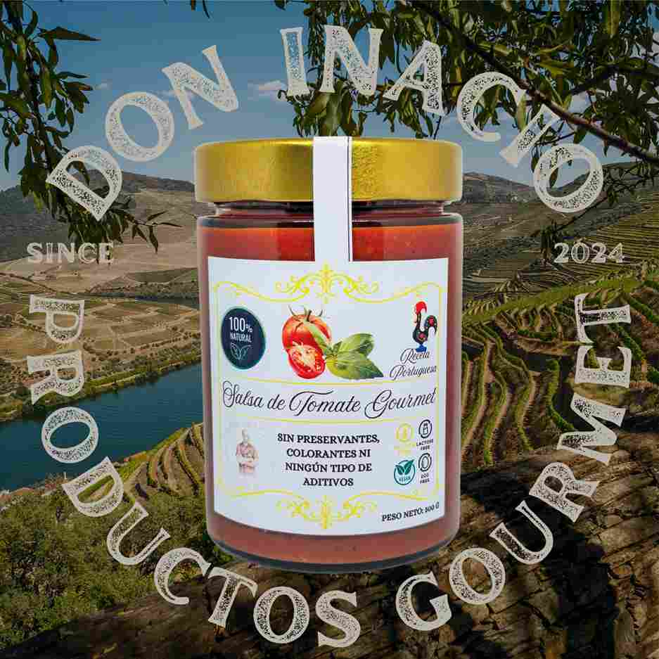
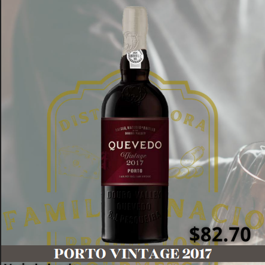

Chef portugues
Fernando Inacio
Chef portugués con amplia experiencia en cocina tradicional y contemporánea. Especializado en sabores auténticos, ingredientes frescos y técnicas culinarias de alta calidad.
Chef portugués con amplia experiencia en cocina tradicional y contemporánea. Especializado en sabores auténticos, ingredientes frescos y técnicas culinarias de alta calidad.
"Mi pasión es la transmisión del saber , y no me conformo con dar de comer: quiero crear emociones.
La excelencia está en la diversidad y el modo de progresar, es conocer y comparar las diversidades de productos, culturas y técnicas, Es importante no confundir la cocina-fusión con la cocina-confusión, que es lo que han hecho muchos cocineros que se han limitado a mezclar sin sentido..."
Mi objetivo es preservar la diferencia: me gustaría ser el"chef antiglobalización". Estoy encantado de tener influencias, a favor de la mezcla, me encanta descubrir cocinas, pero no pienso que haya que crear un modelo único. El verdadero peligro es la unificación de la cocina y del pensamiento, La genialidad sin la base de un producto no tiene sentido. Pero la creatividad, si no hay un proyecto, tampoco tiene razón de ser.
La gente muchas veces me decía "Haces cosas muy raras" y yo les contestaba "Me dedico a la creatividad". A veces hemos querido explicar demasiado la cocina de vanguardia cuando quizá es muy difícil de explicar. Hay que vivirla.
La cocina es un lenguaje mediante el cual se puede expresar armonía, felicidad, belleza, poesía, complejidad, magia, humor, provocación, cultura.
La cocina es multisensorial. En el instante en el que pruebas un plato, la información que llega al cerebro es impresionante.
Las técnicas de cocción, tanto clásicas como modernas, son un patrimonio que el cocinero debe saber aprovechar al máximo.
La creatividad no llega en minutos ni en horas: la creatividad llega en el momento que tiene que llegar.
Cuando los clientes conocen las técnicas precisas para hacer alta cocina, valoran y disfrutan mucho más los platos que les servimos, pues en mi cocina cada plato lleva su tiempo a confeccionar, ser paciente es sinónimo de poder apreciar y disfrutar de lo que hay de mejor en nuestra cocina hecho para cada uno de nuestros clientes con mucha pasión.
"Dilema del cocinero: El poeta triste escribe poemas y te hace llorar. El pintor triste pinta cuadros y te logra emocionar. El músico triste compone canciones y te hace cantar. Al cocinero triste... le está prohibido cocinar"
Ser cocinero es un gran honor. Llamarse "chef", una pequeña huachafería.
FERNANDO INACIO

Nuestras Mermeladas artesanales... elaboradas con frutas naturales, sin conservantes, con un sabor auténtico y equilibrado, ideales para desayunos, postres y tablas gourmet, siguiendo recetas tradicionales.

Salsas elaboradas con chiles frescos y especias naturales, ideales para darle un toque intenso a tus platillos, disponibles en distintos niveles de picante y con sabor auténtico.

Licores artesanales preparados con frutas y hierbas, de aroma y sabor suave y natural, perfectos para disfrutar solos o en cócteles, elaborados mediante procesos artesanales.

Embutidos de curación tradicional, con sabor intenso y textura firme, ideales para degustar, perfectos para acompañar con quesos y vinos, madurados cuidadosamente.

Embutidos suaves y jugosos, elaborados con carnes seleccionadas y recetas artesanales, ideales para sandwiches y platos calientes, de sabor equilibrado.

Salchichas frescas elaboradas con carne seleccionada y especias naturales, perfectas para asar o freír, manteniendo su jugosidad y frescura.

Salsa de tomate artesanal elaborada con tomates frescos y especias naturales, de sabor equilibrado y textura suave, ideal para pastas, carnes y acompañamientos, sin conservantes artificiales.

Selección de vinos que acompañan y realzan nuestros productos y platillos, elegidos para lograr el mejor maridaje y disponibles en distintas variedades.